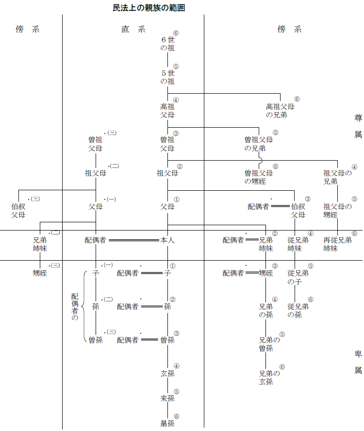

第８編 親 族
第１章 序説
第１節 身分法の意義
親族法と相続法を合わせて、身分法と呼ぶ。
親族法とは、夫婦、親子、その他の親族という基礎的な身分的地位の得喪に関する要件及び身分関係者相互間の権利義務について規定する法のことをいい、相続法とは、身分的地位に結合する財産関係の承継、遺言及び遺留分について規定する法のことをいう。
第２節 身分行為
身分行為とは、身分上の法律効果に向けられた法律行為をいう。
身分行為は、法律行為の一種である。しかし、財産的法律行為に比べて、以下の点において異なった特色を有する。
1. 要式性
形成的身分行為は、原則として戸籍の届出を必要とし、その意味で要式性を有する。財産的法律行為における方式の自由と異なる。
2. 身分行為能力
身分行為をする場合に必要とされる能力は、財産上の判断能力ほど高度なものである必要はなく、その身分行為の意義を理解することができる能力があれば足りる。そこで法は、各種の身分行為に要する能力を具体的場合に応じて規定している。
3. 身分行為の無効・取消し
(1) 身分行為は、本人の真意を重んじるべきものだから、純粋な意思主義が採用され、意思を欠く行為は無効である。すなわち、心裡留保、虚偽表示に基づく身分行為はすべて無効であり、第三者保護のために有効とされることはない。身分行為においては取引安全の要請が働かないからである。
(2) 意思表示に瑕疵のある身分行為の効果については、民法総則上の無効・取消しの規定は当然には適用されず、それぞれの箇所で具体的に規定されている。
4. 身分行為の代理
本人の意思の尊重という観点から、身分行為については原則として代理が許されない。
第２章 親族
1. 親族の種類
(1) 血族・姻族
血族とは、親子、兄弟姉妹等、出生によって血縁につながる者又は法的に血縁があると擬制された者をいう。これに対して、姻族とは、夫と妻の父母・兄弟等、夫婦の一方と他方の血族との関係をいう。
(2) 配偶者
配偶者とは、夫婦の一方からみた他方（ex. 夫からみた妻）をいう。
※ 法律上の婚姻がなされていることを要する。内縁関係、妾関係にあるものは配偶者ではない。
(3) 直系・傍系
直系とは、血統が直下する形で連絡するもの（ex. 父母と子、祖父母と孫）をいい、傍系とは、共同の祖先から分岐した異なった親系に属する者相互の関係（ex. 兄弟姉妹、おじ・おば・甥・姪）をいう。
(4) 尊属・卑属
尊属とは、自分より上の世代に属する者（ex. 父母、祖父母）をいい、卑属とは、自分より下の世代に属する者（ex. 子、孫）をいう。
自己と同じ世代にある者は尊属でも卑属でもない。（ex. 兄弟姉妹、いとこ）
2. 親等
親等とは、親族関係の親疎遠近の程度を示す単位をいう。
親等は、一の親子関係（世代）を単位として算出する世代数親等制によって計算される。
ex. １親等―父母、子、２親等―祖父母、孫、兄弟、３親等―曽祖父母、甥姪、４親等―いとこ
姻族についても配偶者を基準として同様である。
配偶者には親等はない。
3. 範囲
民法上、親族とは、６親等内の血族、配偶者、３親等内の姻族をいう（725条）。
親族の範囲は個人が自由に動かすことはできない。
民法上の親族の範囲

1. この図は、すべて本人からみた場合について示している。
2. アラビア数字は血族とその親等、漢数字は姻族とその親等を示す。
3. 図では省略したが、父・母のいずれかだけが自己の親のとき、その配偶者は姻族１親等であり、同様にして、祖父（母）、曾祖父（母）の配偶者までが親族となる（・印の付いた者も親族（姻族）である。）。
4. 「兄弟」は兄弟姉妹を示す。
第３章 婚姻
第１節 婚姻の成立
婚姻の成立には、①形式的要件としての届出と、②実質的要件としての婚姻意思と、③731条から736条までの条文の規定に違反しないことが必要である。
1. 婚姻届の意義
739条１項は、「婚姻は、戸籍法の定めるところにより届け出ることによって、その効力を生ずる。」と規定している。
2. 届出・手続
(1) 届出は、当事者双方及び成年（※）の証人２人以上が署名した書面で、又はこれらの者から口頭で、しなければならない（739条２項）。
(2) 戸籍を管掌する市町村長又は届出を受けた大使等は、届出が法定の形式を充たしていること、及び後述の婚姻障害のないこと（実質的要件の具備）を認めた後でなければ、これを受理してはならない（740条、741条）。審査は、外形的な事項について形式的に行われるべきであり、実質の真偽の審査はできない。
婚姻は届出の受理によってはじめて効力を生じる。ただし、戸籍簿に記載されることは必要ではない。
(3) 届出が婚姻の成立要件である以上、婚姻の各要件は届出時に存在することが必要である。しかし、本人が、生存中に有効に作成し郵送した届書は、本人の死亡後に到着した場合でも効力を生じ、死亡の時に届出があったものとみなされる（戸籍法47条）。届出受理の当時、本人が意思能力を失っていても届出は有効であるとされる（最判昭44.４.３）。
1. 婚姻の実質的要件
①婚姻意思の合致
②婚姻適齢（731条）
③重婚の禁止（732条）
④近親者間の婚姻の禁止（734条～736条）
⇒①②③④ 婚姻障害（阻止要件）
2. 婚姻意思の合致
(1) 婚姻も契約である以上、当事者間に婚姻意思の合致があることが必要である。民法も当事者間に婚姻する意思がないときは無効とし（742条１号）、これを当然の前提としている。
Ｑ この婚姻意思の内容をいかに解するかについては争いがある。
→ 実質的意思説（最判昭44.10.31・通説）
届出意思では足りず、客観的に夫婦とみられる生活共同体の創設を真に欲する意思（実質的意思）が必要である。
（理由）
身分行為においては、当事者の真意を第一に尊重すべきであり、届出は単にそれを公示する機能をもつにすぎない。
(2) 婚姻は、終生の共同生活の継続を目的とするものなので、婚姻にあたって条件や期限を付すことはできない。
(3) 婚姻は、当事者本人の自由な意思に基づくものでなければならないから、成年被後見人も、意思能力がある限り自らの意思で婚姻すべきであり、代理による婚姻は認められない。
3. 婚姻障害がないこと
(1) 婚姻適齢
婚姻は、18歳にならなければすることができない（731条）。早婚によって生じる弊害を防止しようとする公益的目的による。以前は婚姻開始年齢に男女差を設けていたが、男女の取扱いの差を維持する必要はないと考えられ、改正がなされた。
(2) 重婚の禁止
配偶者のある者は、重ねて婚姻をすることができない（732条）。
一般に、重婚は審査の段階で阻止されるから、重婚が生じるのは限られた場合である。例えば、後婚の婚姻届が誤って受理された場合、離婚後に再婚したが離婚が無効であった場合、日本と外国で二重に婚姻した場合などである。
(3) 近親婚の禁止
一定範囲の近親者間の婚姻は、次の２つの理由から禁止されている。
(a) 優生学上の理由による禁止
自然血族のうち、直系血族又は３親等内の傍系血族の間では婚姻をすることができない（734条１項本文）。４親等すなわち従兄弟姉妹及びそれより遠い血族間では、父系、母系を問わず、何らの制限もない。
(b) 道義上の理由による禁止
法定の直系血族（ex. 養親と養子）であり、又はあった者の間では婚姻できない（734条、736条）。親子、又はその延長にある者、又はあった者の婚姻を認めるのは道義人情に反するという理由に基づく。同様の理由で、直系姻族であり、又はあった者（728条参照）の間では互いに婚姻できない（735条、736条）。
※ 養子と養方の傍系血族との間では、婚姻をすることができる（734条１項ただし書）。
第２節 婚姻の無効・取消し
1. 無効原因
婚姻は、①婚姻意思の欠缺、②届出の懈怠の場合に限って、無効とされる。
(1) 婚姻意思の欠缺（742条１号）
(a) 「人違いその他の事由によって当事者間に婚姻をする意思がないとき」には、婚姻は無効となる。
婚姻意思の内容につき実質的意思説をとると、外国に入国するため、又は、子に嫡出性を与えるために届出をした場合にも、婚姻意思がないことになり、婚姻は無効である。
(b) 当事者の一方が、他方の承諾なしに婚姻届を提出した場合、婚姻意思の合致があるといえないから、その婚姻は無効である。しかし、当事者が内縁関係にあるときについて、判例は、当事者間に夫婦としての実質的生活関係が存在しており、かつ、後に他方が届出の事実を知って追認したときは、116条本文の類推適用により、この婚姻は追認によって届出の当初にさかのぼって有効となるとした（最判昭47.７.25）。すなわち、内縁関係の存在に加え、届出の追認を要件に婚姻の有効性を認めたのである。
(2) 届出の懈怠（742条２号）
「当事者が婚姻の届出をしないとき」も、婚姻は無効とされる。
もっとも、届出を婚姻の成立要件とする通説の立場では、無効ではなく不成立ということになる。
2. 無効主張の主体・方法など
(1) 婚姻が無効であることは、当事者だけでなく、利害関係のある者は誰でも、当事者の死亡後でも、主張することができる。
(2) 婚姻が無効である場合には、当事者間に夫婦としての法律関係はまったく生じない。従って、その間に生まれた子は、嫡出子とはならない。
1. 取消原因
(1) 公益的見地に基づくもの
①不適齢婚、②重婚、③違法な近親者間の婚姻
(2) 私益的見地に基づくもの
詐欺又は強迫による婚姻（第三者の詐欺による場合でも取り消すことができる。747条）
(3) 取消権の消滅
以上の取消原因がある場合にも、次の場合には取り消すことができない。
① 不適齢婚の婚姻は、その者が適齢に達したとき。ただし、不適齢者本人は、適齢に達した後３か月は追認をしない限り、取り消すことができる（745条）。
② 詐欺又は強迫による婚姻は、当事者が詐欺を発見し、若しくは強迫を免れてから３か月を経過し、又は追認したとき（747条２項）
※ 取消しの対象である婚姻が当事者の死亡によって解消した後にも取消権はなくならない（744条１項ただし書参照。）。
※ 重婚が離婚によって解消した場合に、なお取り消すことができるかは問題となる。判例・多数説は、離婚になれば違法状態は解消し、離婚と取消しとでその効果はほとんど異ならないので、特段の事情のない限りこれを否定している（最判昭57.９.28）。
2. 取消権者
婚姻の取消しは、法の定める者だけが裁判所に請求することができる。
(1) 公益的理由に基づく取消原因－①各当事者のほか、②その親族、③検察官
ただし、検察官は当事者の一方が死亡した後は、取消しを請求することはできない（744条１項）。
なお、重婚の場合には、当事者の配偶者又は前配偶者も取消しを請求することができる（744条２項）。
(2) 私益的理由に基づく取消原因（詐欺又は強迫による婚姻）－詐欺又は強迫を受けた当事者（747条１項）。
3. 取消しの方法
婚姻の取消しは一般の取消しと異なり（123条参照）、必ず家庭裁判所に請求しなければならない（744条１項、747条１項）。身分関係の変動を慎重かつ明確にさせようとする趣旨である。
4. 取消しの効果
(1) 遡及効の制限
婚姻が取り消されると、その効果は将来に向かってのみ生じる（748条１項）。既存の事実としての婚姻や生まれた子の存在を否定することはできないからである。従って、その婚姻によって生まれた子や準正された子は、取消しによっても嫡出子たる身分を失うことはない。
(2) 離婚の規定の準用
婚姻が将来に向かって解消する点で、離婚に類似するので、離婚に関する規定が準用される（749条）。
その結果、離婚後の子の監護（766条）、離婚による復氏（767条）、財産分与（768条）、祭祀財産の承継（769条）、子の氏（790条１項ただし書）、親権者（819条２項、３項、５項～７項）などについて離婚と同じ処理がなされる。
(3) 財産返還義務
(a) 婚姻時に取消原因があることを知らなかった場合（748条２項）
婚姻時に取消原因があることを知らなかった当事者が、婚姻によって財産を得たときは、現存利益の返還で足りる。
(b) 婚姻時に取消原因があることを知っていた場合（748条３項）
当事者が婚姻時に取消原因があることを知っていた場合には、利益の全部を返還しなければならず、相手方が善意であったときは、損害賠償責任も負わなければならない。
第３節 婚姻の効果
1. 夫婦の同氏
夫婦は必ず同一の氏を称する。その氏は、夫又は妻の氏であって、婚姻の際に当事者が決定する（750条）。
2. 同居・協力・扶助義務
(1) 夫婦は同居し、互いに協力し扶助しなければならない（752条）。
(2) いずれの義務違反も、正当な理由に基づかないときは、「悪意」の「遺棄」として離婚原因となる（770条１項２号）。
3. 貞操の義務
夫婦は、互いに貞操を守る義務を負う。
一方配偶者がこの義務に違反したときは、他方配偶者は債務不履行に基づく損害賠償請求（415条）をすることができる。また、不貞行為の相手方たる第三者に対しては、不法行為に基づく損害賠償請求（709条）をすることができる（最判昭54.３.30）。
※旧民法754条
夫婦間の契約取消権の規定（旧民法754条）は廃止されているため、夫婦間の真意に反する契約は、意思表示の規定（心裡留保、錯誤等）によって取り消すこととなる。
1. 序説
夫婦財産制には、婚姻する男女が合意によって自由にその内容を定める夫婦財産契約（契約財産制）と、そのような契約がなされなかった場合の補充のための法定財産制とがある（755条）。
2. 夫婦財産契約
(1) 意義
婚姻しようとする者は、婚姻の届出前に、婚姻中の夫婦財産関係に関する契約をすることができる（755条）。夫婦財産契約の効力発生は婚姻の時であり、婚姻が無効・取消しとなれば効力を失う。
(2) 対抗要件
夫婦財産契約を、夫婦の承継人や第三者に対抗するには、登記しておくことを要する（756条、外国法人の登記及び夫婦財産契約の登記に関する法律５条以下）。
(3) 変更の可否
夫婦財産契約は、原則として婚姻届出後は変更できない（758条１項）。
3. 法定財産制
夫婦財産契約の締結がない場合には、財産関係は760条から762条までの法定財産制によって規律される（755条）。民法は夫婦の平等に立脚し、夫婦別産制をとる（762条１項）。ただし、第三者に対しては一定の範囲で連帯責任を負う（761条）ことを認めている。
(1) 夫婦財産の帰属・管理
夫婦の一方が婚姻前から有する財産及び婚姻中に自己の名で得た財産は、その特有財産（夫婦の一方が単独で有する財産）とされる（762条１項）。これがいわゆる夫婦別産制である。
婚姻共同生活継続中に生じた帰属不明の財産は、夫婦の共有と推定される（762条２項）。
(2) 婚姻費用の分担
婚姻費用（生活費、子の養育等の婚姻から生じる費用）は、夫婦間で分担すべきものである（760条）。分担額について夫婦間の協議が整わない場合、又は夫婦の一方が分担額を支出しない場合には、家庭裁判所に婚姻費用分担の審判を申し立てることができる（家事事件手続法39条、別表第2第2項）。
(3) 日常の家事に関する債務の連帯責任
(a) 夫婦の一方が日常の家事に関して第三者と法律行為をしたときは、他の一方は、これによって生じた債務について、連帯してその責任を負う（761条本文）。
(b) 第三者に対して責任を負わない旨の予告をした場合には、上記の連帯責任を負うことはない（761条ただし書）。この予告は、配偶者と取引きをする相手方に対し、個別的にすることを必要とする。